lorenz_partial_additive_mse_mostrecent_p30_obsnoise001_init15_autodim__ndelays_sweepProject: Lorenz_INDpartial_NDInitSweep_autodim_D1_NormTrue__JacobianODE
Launched: 2026-04-21T22:35:12Z
Completed: 2026-04-22T14:05:19Z
Outcome: complete_clean
Git: latent-JacobianODE @ 0d588c2
Expected runs: 20
lorenz_partial_additive_mse_mostrecent_p30_obsnoise001_init15_autodim__ndelays_sweepDescription
Lorenz partial additive coupling, obs_noise=0.01, prediction_steps=30, traj_init_steps=15, loop_closure_weight=0. Sweeps n_delays over [5, 10, ..., 100] (20 runs). Training reconstruction_mode set to 'most_recent' (was 'uniform' in the sibling autodim sweep); encoder final_perm_identity disabled (default permutation_seed=42 routing). n_target_dims auto-picked via PCA (threshold=0.99) per n_delays.
Hypothesis
Two hypotheses coupled in one sweep: (a) Uniform-vs-most_recent training mismatch: switching training loss to most_recent (same as val) should improve val traj_loss at each n_delays, especially at high n_delays where most_recent was previously receiving only 1/n_delays of the gradient. (b) Encoder routing: does the stuck-training failure at n_delays=30 seed=42 (decoded[0] independent of z_dyn at init) persist under most_recent training? Arguably it should be WORSE — most_recent loss only flows gradient through decoded[0], so if decoded[0] starts disconnected from z_dyn the dynamics MLP gets zero gradient from the reconstruction term. A non-stuck n_delays=30 here would be surprising. A stuck one would confirm that routing, not the loss mode, is the main driver of that bug.
Success criteria
Swept axes (9): data.train_test_params.delay_embedding_params.n_delays, model.encoder.init_pca_basis, model.encoder.n_input, model.encoder_only_mode, model.n_target_dims, model.n_target_dims_pca_auto, model.n_target_dims_pca_cum_var, model.params.input_dim, model.params.output_dim
Chosen run (by best_traj_loss): po6s8431 — traj_loss=0.00079, MASE=0.7128, R²=0.9979, LC loss=4.683, epoch=114.0
Swept-axis values at chosen run: data.train_test_params.delay_embedding_params.n_delays=70 · model.encoder.init_pca_basis=None · model.encoder.n_input=70 · model.encoder_only_mode=None · model.n_target_dims=6 · model.n_target_dims_pca_auto=6 · model.n_target_dims_pca_cum_var=0.994529 · model.params.input_dim=6 · model.params.output_dim=36
Runs analyzed: 20 (expected 20)
| run_idx | run_id | data.train_test_params.delay_embedding_params.n_delays |
model.encoder.init_pca_basis |
model.encoder.n_input |
model.encoder_only_mode |
model.n_target_dims |
model.n_target_dims_pca_auto |
model.n_target_dims_pca_cum_var |
model.params.input_dim |
model.params.output_dim |
best_traj_loss | best_MASE | R² | LC loss | epoch |
|---|---|---|---|---|---|---|---|---|---|---|---|---|---|---|---|
| 7 | stn87km8 |
40 | None | 40 | None | 4 | 4 | 0.995447 | 4 | 16 | 0.00188 | 0.8278 | 0.9949 | 1.122 | 94.0 |
| 3 | a34dwxnq |
20 | False | 20 | False | 3 | 3 | 0.998615 | 3 | 9 | 0.00202 | 0.9223 | 0.9945 | 0.724 | 112.0 |
| 0 | w2y8e32c |
5 | False | 5 | False | 1 | 1 | 0.993092 | 1 | 1 | 0.06676 | 6.8358 | 0.8229 | 0.000 | 175.0 |
| 1 | g1aadwyo |
10 | False | 10 | False | 2 | 2 | 0.998549 | 2 | 4 | nan | nan | nan | 4.067 | — |
| 13 | po6s8431 |
70 | None | 70 | None | 6 | 6 | 0.994529 | 6 | 36 | 0.00079 | 0.7128 | 0.9979 | 4.683 | 114.0 |
| 16 | 0zfx9b3t |
85 | None | 85 | None | 6 | 6 | 0.990619 | 6 | 36 | 0.00082 | 0.6347 | 0.9978 | 1.694 | 151.0 |
| 12 | f2n9l6b2 |
65 | None | 65 | None | 5 | 5 | 0.991353 | 5 | 25 | 0.00088 | 0.7407 | 0.9976 | 3.133 | 109.0 |
| 15 | bnlke2kz |
80 | False | 80 | False | 6 | 6 | 0.991932 | 6 | 36 | 0.00093 | 0.6750 | 0.9975 | 3.221 | 189.0 |
| 19 | i8tynojj |
100 | False | 100 | None | 7 | 7 | 0.991454 | 7 | 49 | 0.00108 | 0.7774 | 0.9970 | 2.284 | 65.0 |
| 4 | ksmx64u6 |
25 | None | 25 | None | 3 | 3 | 0.997001 | 3 | 9 | 0.00402 | 1.2571 | 0.9892 | 0.659 | 48.0 |
| 2 | 9j7mtd3g |
15 | None | 15 | None | 2 | 2 | 0.995018 | 2 | 4 | 0.00550 | 1.2164 | 0.9857 | 0.214 | 107.0 |
| 5 | y6duoowr |
30 | False | 30 | False | 3 | 3 | 0.994315 | 3 | 9 | 1.09857 | 34.4996 | -1.9571 | 0.001 | — |
| 6 | joypdpu0 |
35 | None | 35 | None | 3 | 3 | 0.990505 | 3 | 9 | nan | nan | nan | 11.134 | — |
| 8 | d3ps1lwi |
45 | None | 45 | None | 4 | 4 | 0.993267 | 4 | 16 | nan | nan | nan | 25.675 | — |
| 9 | t7d1s7gh |
50 | False | 50 | False | 4 | 4 | 0.990769 | 4 | 16 | 0.01331 | 1.3964 | 0.9637 | 2.256 | 15.0 |
| 10 | zjz4ku38 |
55 | False | 55 | False | 5 | 5 | 0.994855 | 5 | 25 | nan | nan | nan | 36.772 | — |
| 11 | arzktxki |
60 | None | 60 | None | 5 | 5 | 0.993171 | 5 | 25 | nan | nan | nan | 61.081 | — |
| 14 | i6oh943r |
75 | None | 75 | None | 6 | 6 | 0.993244 | 6 | 36 | nan | nan | nan | 7.297 | — |
| 17 | ivxoqrho |
90 | False | 90 | False | 7 | 7 | 0.993494 | 7 | 49 | nan | nan | nan | 3.260 | — |
| 18 | arjmvu4r |
95 | False | 95 | None | 7 | 7 | 0.992462 | 7 | 49 | nan | nan | nan | 23.253 | — |
| Criterion | Verdict | Note |
|---|---|---|
| All 20 runs train without NaNs | Unknown | |
| At least at best n_delays, val traj_loss is lower (or R² higher) than the uniform-trained autodim sibling | Unknown | |
| n_delays=30 under most_recent either reproduces the stuck-training pattern or converges cleanly — either outcome is diagnostic | Unknown | |
| The best n_delays per this sweep matches or differs from the autodim sibling's (55-70) in an interpretable way | Unknown |
Automated verdicts use simple numeric-threshold parsing and may mis-classify qualitative criteria. The Discussion section below takes precedence.
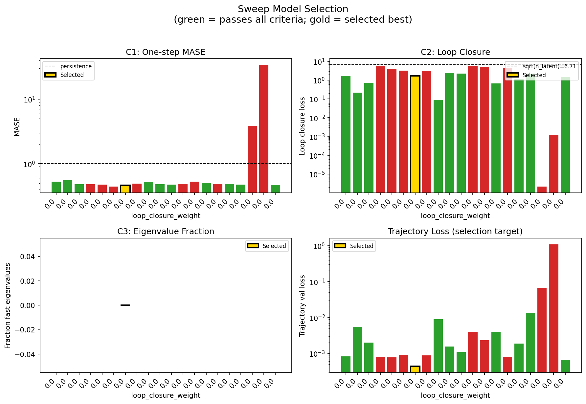
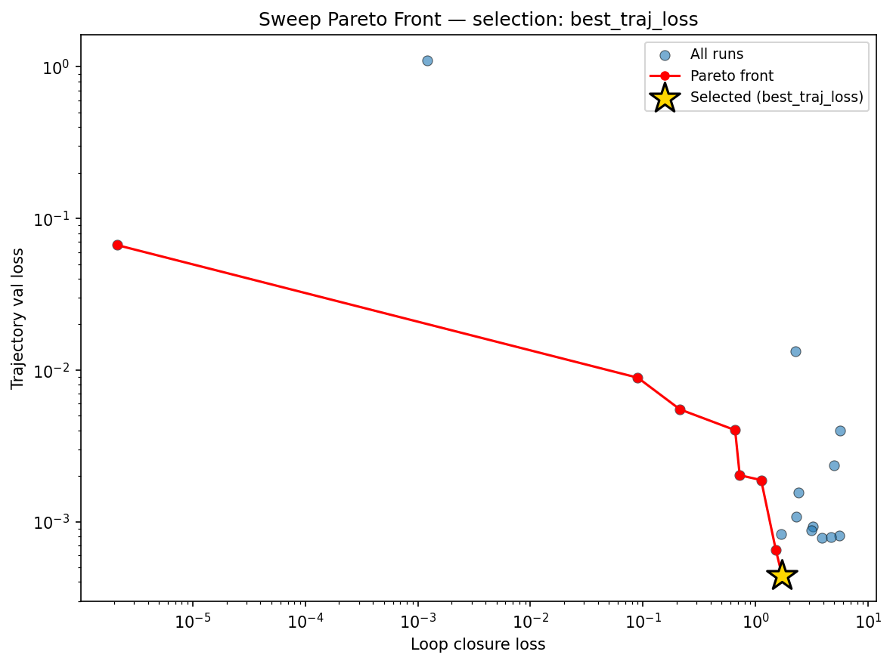
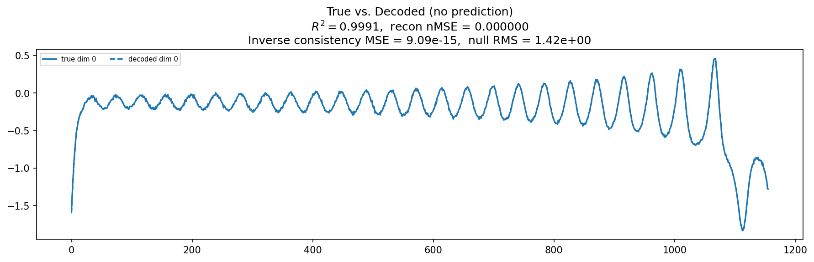
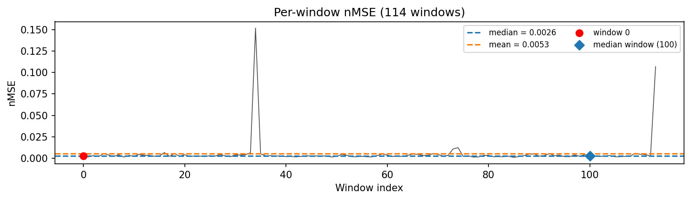
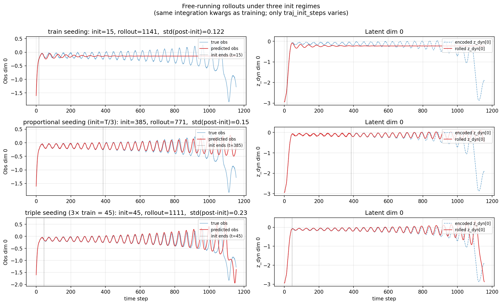
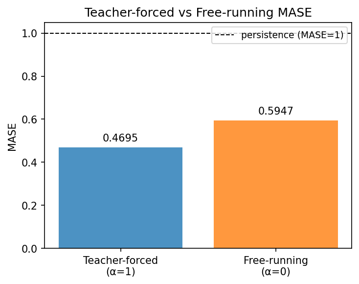
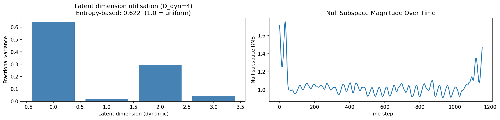
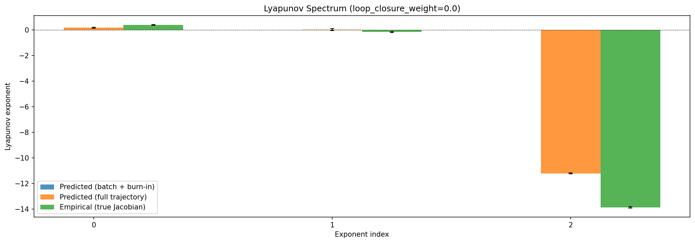
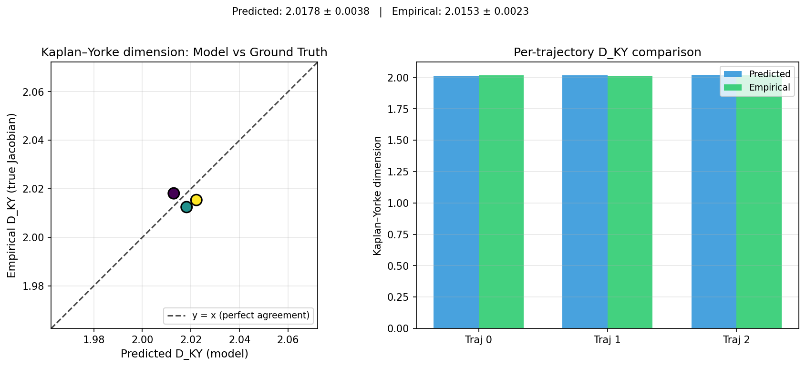
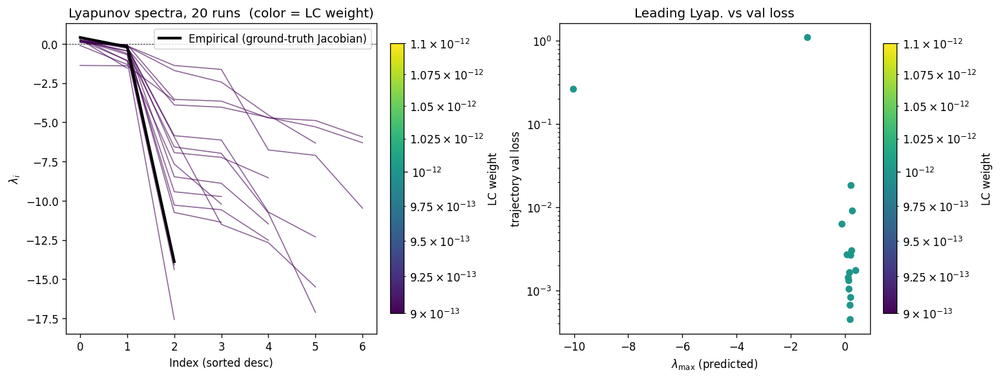
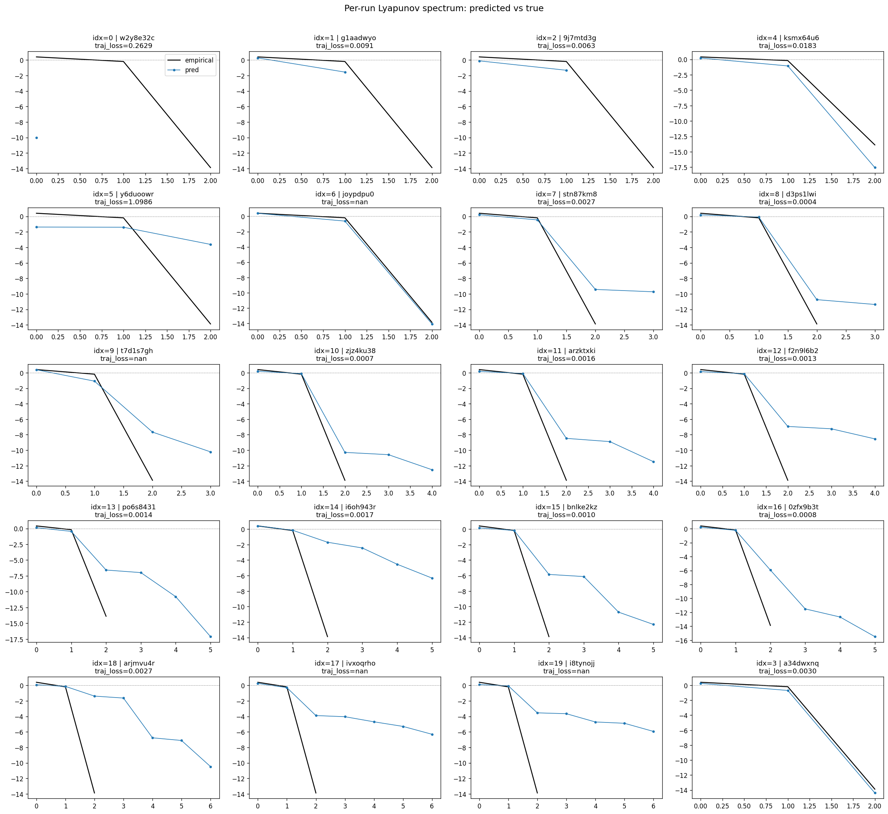
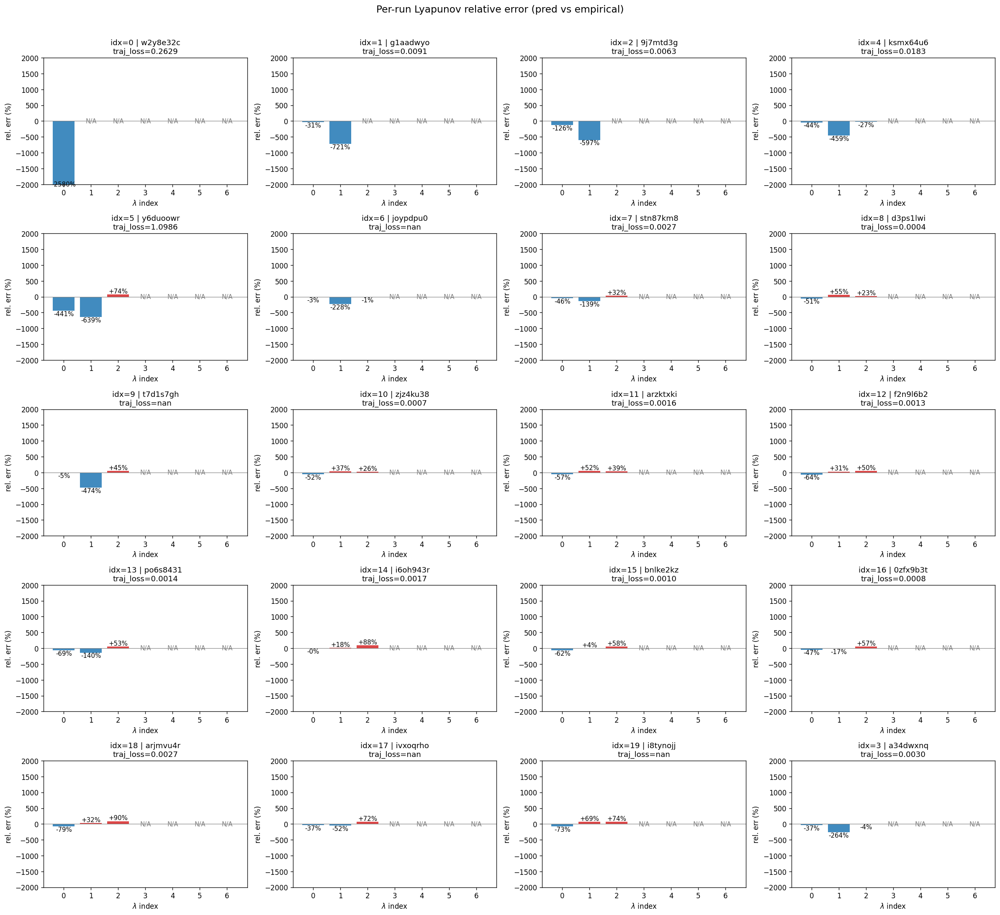
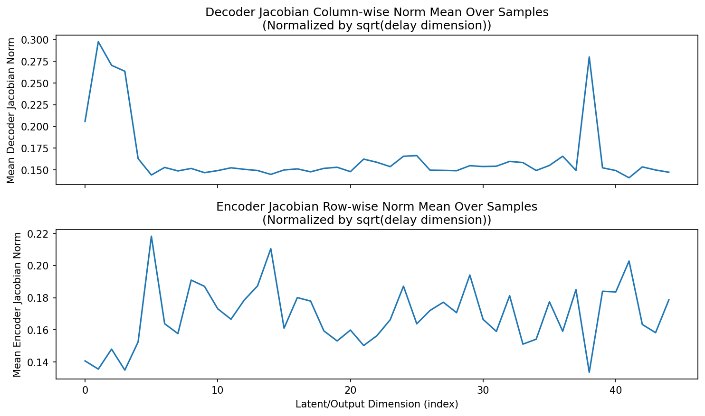
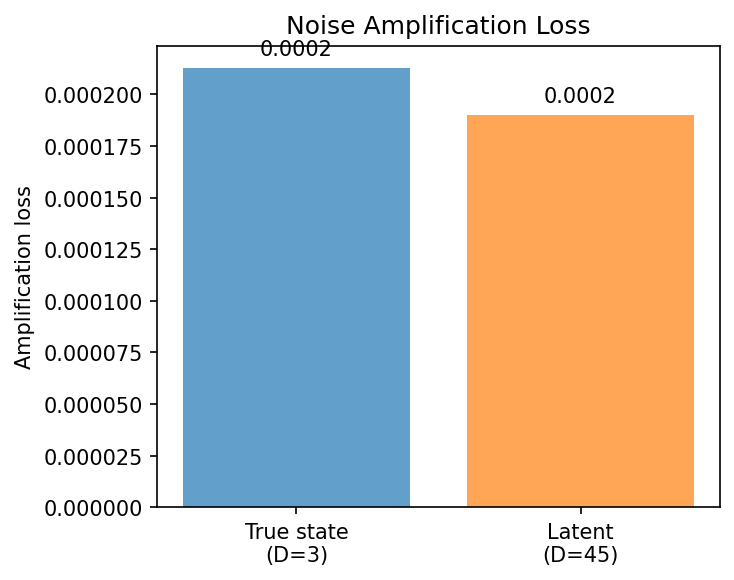
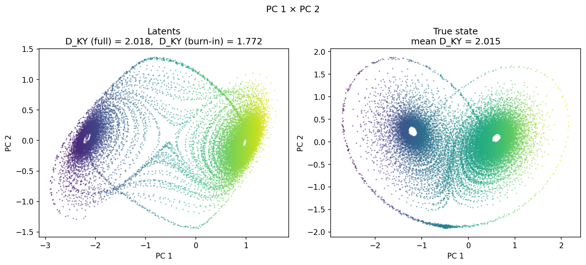
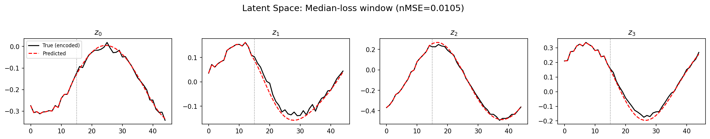
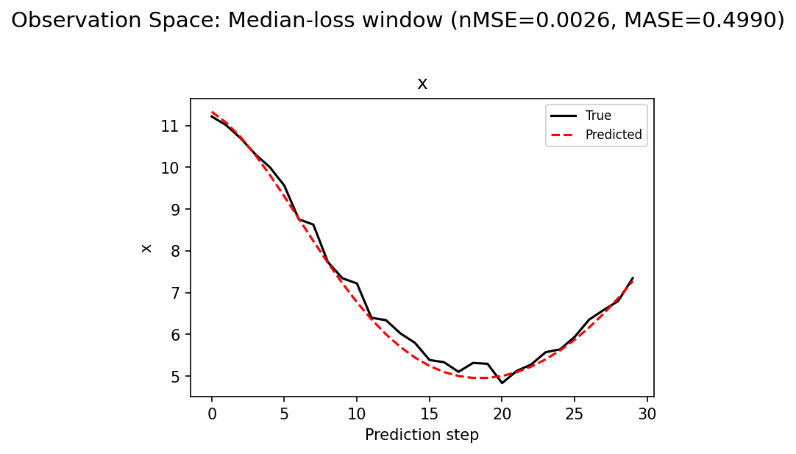
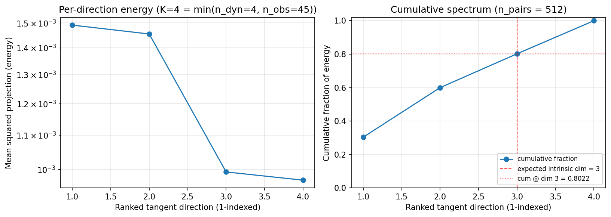
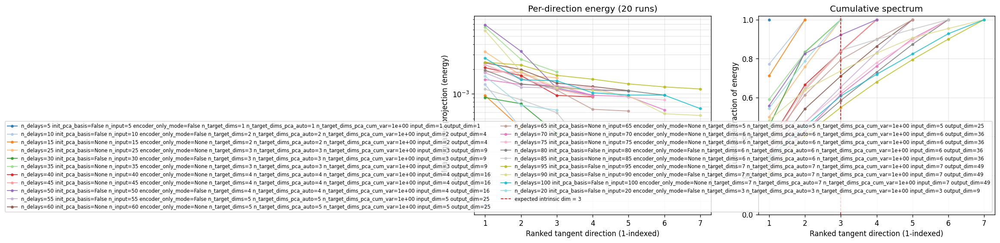
(to be written)
run_analytics stdoutrun_analyticsNo run_id provided — selecting best run from group 'lorenz_partial_additive_mse_mostrecent_p30_obsnoise001_init15_autodim__ndelays_sweep' ...
Found 21 total runs in JacobianODE/Lorenz_INDpartial_NDInitSweep_autodim_D1_NormTrue__JacobianODE (group=lorenz_partial_additive_mse_mostrecent_p30_obsnoise001_init15_autodim__ndelays_sweep)
All runs (state, loop_closure_weight, tangent_entropy_weight, kl_dyn_weight):
w2y8e32c: state=finished, lc=0.0, te=0.0, kl_dyn=0.0
g1aadwyo: state=finished, lc=0.0, te=0.0, kl_dyn=0.0
9j7mtd3g: state=finished, lc=0.0, te=0.0, kl_dyn=0.0
3seql3o0: state=finished, lc=0.0, te=0.0, kl_dyn=0.0
ksmx64u6: state=finished, lc=0.0, te=0.0, kl_dyn=0.0
y6duoowr: state=finished, lc=0.0, te=0.0, kl_dyn=0.0
joypdpu0: state=finished, lc=0.0, te=0.0, kl_dyn=0.0
stn87km8: state=finished, lc=0.0, te=0.0, kl_dyn=0.0
d3ps1lwi: state=finished, lc=0.0, te=0.0, kl_dyn=0.0
t7d1s7gh: state=finished, lc=0.0, te=0.0, kl_dyn=0.0
zjz4ku38: state=finished, lc=0.0, te=0.0, kl_dyn=0.0
arzktxki: state=finished, lc=0.0, te=0.0, kl_dyn=0.0
f2n9l6b2: state=finished, lc=0.0, te=0.0, kl_dyn=0.0
po6s8431: state=finished, lc=0.0, te=0.0, kl_dyn=0.0
i6oh943r: state=crashed, lc=0.0, te=0.0, kl_dyn=0.0
bnlke2kz: state=finished, lc=0.0, te=0.0, kl_dyn=0.0
0zfx9b3t: state=crashed, lc=0.0, te=0.0, kl_dyn=0.0
arjmvu4r: state=crashed, lc=0.0, te=0.0, kl_dyn=0.0
ivxoqrho: state=finished, lc=0.0, te=0.0, kl_dyn=0.0
i8tynojj: state=finished, lc=0.0, te=0.0, kl_dyn=0.0
a34dwxnq: state=finished, lc=0.0, te=0.0, kl_dyn=0.0
slurm_timeout_min not found in any run config — falling back to 180 min
Including w2y8e32c (lc=0.0): use_all_runs=True (state=finished)
Including g1aadwyo (lc=0.0): use_all_runs=True (state=finished)
Including 9j7mtd3g (lc=0.0): use_all_runs=True (state=finished)
Including 3seql3o0 (lc=0.0): use_all_runs=True (state=finished)
Including ksmx64u6 (lc=0.0): use_all_runs=True (state=finished)
Including y6duoowr (lc=0.0): use_all_runs=True (state=finished)
Including joypdpu0 (lc=0.0): use_all_runs=True (state=finished)
Including stn87km8 (lc=0.0): use_all_runs=True (state=finished)
Including d3ps1lwi (lc=0.0): use_all_runs=True (state=finished)
Including t7d1s7gh (lc=0.0): use_all_runs=True (state=finished)
Including zjz4ku38 (lc=0.0): use_all_runs=True (state=finished)
Including arzktxki (lc=0.0): use_all_runs=True (state=finished)
Including f2n9l6b2 (lc=0.0): use_all_runs=True (state=finished)
Including po6s8431 (lc=0.0): use_all_runs=True (state=finished)
Including i6oh943r (lc=0.0): use_all_runs=True (state=crashed)
Including bnlke2kz (lc=0.0): use_all_runs=True (state=finished)
Including 0zfx9b3t (lc=0.0): use_all_runs=True (state=crashed)
Including arjmvu4r (lc=0.0): use_all_runs=True (state=crashed)
Including ivxoqrho (lc=0.0): use_all_runs=True (state=finished)
Including i8tynojj (lc=0.0): use_all_runs=True (state=finished)
Including a34dwxnq (lc=0.0): use_all_runs=True (state=finished)
Found 21 effectively-done sweep runs:
loop_closure_weight=0.0, tangent_entropy_weight=0.0, kl_dyn_weight=0.0 -> run_id=0zfx9b3t
loop_closure_weight=0.0, tangent_entropy_weight=0.0, kl_dyn_weight=0.0 -> run_id=3seql3o0
loop_closure_weight=0.0, tangent_entropy_weight=0.0, kl_dyn_weight=0.0 -> run_id=9j7mtd3g
loop_closure_weight=0.0, tangent_entropy_weight=0.0, kl_dyn_weight=0.0 -> run_id=a34dwxnq
loop_closure_weight=0.0, tangent_entropy_weight=0.0, kl_dyn_weight=0.0 -> run_id=arjmvu4r
loop_closure_weight=0.0, tangent_entropy_weight=0.0, kl_dyn_weight=0.0 -> run_id=arzktxki
loop_closure_weight=0.0, tangent_entropy_weight=0.0, kl_dyn_weight=0.0 -> run_id=bnlke2kz
loop_closure_weight=0.0, tangent_entropy_weight=0.0, kl_dyn_weight=0.0 -> run_id=d3ps1lwi
loop_closure_weight=0.0, tangent_entropy_weight=0.0, kl_dyn_weight=0.0 -> run_id=f2n9l6b2
loop_closure_weight=0.0, tangent_entropy_weight=0.0, kl_dyn_weight=0.0 -> run_id=g1aadwyo
loop_closure_weight=0.0, tangent_entropy_weight=0.0, kl_dyn_weight=0.0 -> run_id=i6oh943r
loop_closure_weight=0.0, tangent_entropy_weight=0.0, kl_dyn_weight=0.0 -> run_id=i8tynojj
loop_closure_weight=0.0, tangent_entropy_weight=0.0, kl_dyn_weight=0.0 -> run_id=ivxoqrho
loop_closure_weight=0.0, tangent_entropy_weight=0.0, kl_dyn_weight=0.0 -> run_id=joypdpu0
loop_closure_weight=0.0, tangent_entropy_weight=0.0, kl_dyn_weight=0.0 -> run_id=ksmx64u6
loop_closure_weight=0.0, tangent_entropy_weight=0.0, kl_dyn_weight=0.0 -> run_id=po6s8431
loop_closure_weight=0.0, tangent_entropy_weight=0.0, kl_dyn_weight=0.0 -> run_id=stn87km8
loop_closure_weight=0.0, tangent_entropy_weight=0.0, kl_dyn_weight=0.0 -> run_id=t7d1s7gh
loop_closure_weight=0.0, tangent_entropy_weight=0.0, kl_dyn_weight=0.0 -> run_id=w2y8e32c
loop_closure_weight=0.0, tangent_entropy_weight=0.0, kl_dyn_weight=0.0 -> run_id=y6duoowr
loop_closure_weight=0.0, tangent_entropy_weight=0.0, kl_dyn_weight=0.0 -> run_id=zjz4ku38
Dropping 1 run(s) with no checkpoint dir: ['3seql3o0']
n_dims=85, n_latent=85, n_dyn=6, dt=0.0150
run=0zfx9b3t: DiagnosticMetrics(one_step_mase=0.5283381342887878, loop_closure_loss=1.693570852279663, fast_eigenvalue_fraction=0.0, trajectory_val_loss=0.0008239136659540236) (from W&B history)
run=9j7mtd3g: DiagnosticMetrics(one_step_mase=0.5508890151977539, loop_closure_loss=0.21350474655628204, fast_eigenvalue_fraction=0.0, trajectory_val_loss=0.0055006034672260284) (from W&B history)
run=a34dwxnq: DiagnosticMetrics(one_step_mase=0.4810470640659332, loop_closure_loss=0.7241966724395752, fast_eigenvalue_fraction=0.0, trajectory_val_loss=0.0020247555803507566) (from W&B history)
run=arjmvu4r: DiagnosticMetrics(one_step_mase=0.4803175926208496, loop_closure_loss=5.527017593383789, fast_eigenvalue_fraction=0.0, trajectory_val_loss=0.0008119009435176849) (from W&B history)
run=arzktxki: DiagnosticMetrics(one_step_mase=0.4733150601387024, loop_closure_loss=3.9098424911499023, fast_eigenvalue_fraction=0.0, trajectory_val_loss=0.0007852786220610142) (from W&B history)
run=bnlke2kz: DiagnosticMetrics(one_step_mase=0.4412899613380432, loop_closure_loss=3.2213733196258545, fast_eigenvalue_fraction=0.0, trajectory_val_loss=0.0009293089970014989) (from W&B history)
run=d3ps1lwi: DiagnosticMetrics(one_step_mase=0.4643539488315582, loop_closure_loss=1.721946358680725, fast_eigenvalue_fraction=0.0, trajectory_val_loss=0.00044178252574056387) (from W&B history)
run=f2n9l6b2: DiagnosticMetrics(one_step_mase=0.49131083488464355, loop_closure_loss=3.132566213607788, fast_eigenvalue_fraction=0.0, trajectory_val_loss=0.0008752223802730441) (from W&B history)
run=g1aadwyo: DiagnosticMetrics(one_step_mase=0.5211939215660095, loop_closure_loss=0.09001751244068146, fast_eigenvalue_fraction=0.0, trajectory_val_loss=0.008903604932129383) (from W&B history)
run=i6oh943r: DiagnosticMetrics(one_step_mase=0.48158013820648193, loop_closure_loss=2.4047398567199707, fast_eigenvalue_fraction=0.0, trajectory_val_loss=0.0015659504570066929) (from W&B history)
run=i8tynojj: DiagnosticMetrics(one_step_mase=0.47509074211120605, loop_closure_loss=2.2841503620147705, fast_eigenvalue_fraction=0.0, trajectory_val_loss=0.0010818451410159469) (from W&B history)
run=ivxoqrho: DiagnosticMetrics(one_step_mase=0.4863307476043701, loop_closure_loss=5.634922027587891, fast_eigenvalue_fraction=0.0, trajectory_val_loss=0.003983493894338608) (from W&B history)
run=joypdpu0: DiagnosticMetrics(one_step_mase=0.5261607766151428, loop_closure_loss=4.956460475921631, fast_eigenvalue_fraction=0.0, trajectory_val_loss=0.002340638544410467) (from W&B history)
run=ksmx64u6: DiagnosticMetrics(one_step_mase=0.502865195274353, loop_closure_loss=0.6588351726531982, fast_eigenvalue_fraction=0.0, trajectory_val_loss=0.004016640596091747) (from W&B history)
run=po6s8431: DiagnosticMetrics(one_step_mase=0.4852477014064789, loop_closure_loss=4.683459281921387, fast_eigenvalue_fraction=0.0, trajectory_val_loss=0.0007877791649661958) (from W&B history)
run=stn87km8: DiagnosticMetrics(one_step_mase=0.4874505400657654, loop_closure_loss=1.122267246246338, fast_eigenvalue_fraction=0.0, trajectory_val_loss=0.001881297561340034) (from W&B history)
run=t7d1s7gh: DiagnosticMetrics(one_step_mase=0.47719937562942505, loop_closure_loss=2.2563648223876953, fast_eigenvalue_fraction=0.0, trajectory_val_loss=0.013305213302373886) (from W&B history)
run=w2y8e32c: DiagnosticMetrics(one_step_mase=3.854644298553467, loop_closure_loss=2.128328787875944e-06, fast_eigenvalue_fraction=0.0, trajectory_val_loss=0.06675933301448822) (from W&B history)
run=y6duoowr: DiagnosticMetrics(one_step_mase=34.35683059692383, loop_closure_loss=0.001217939192429185, fast_eigenvalue_fraction=0.0, trajectory_val_loss=1.0985738039016724) (from W&B history)
run=zjz4ku38: DiagnosticMetrics(one_step_mase=0.46935245394706726, loop_closure_loss=1.514388918876648, fast_eigenvalue_fraction=0.0, trajectory_val_loss=0.0006527548539452255) (from W&B history)
Ranking method: best_traj_loss
Best run ID: d3ps1lwi
Best loop_closure_weight: 0.0
Best tangent_entropy_weight: 0.0
Best kl_dyn_weight: 0.0
Best traj loss: 0.000442
Criteria applied: ['C1', 'C2', 'C3']
Surviving: 11 / 20
Auto-selected run_id: d3ps1lwi
======================================================================
PARETO FRONTIER RUNS (8 runs)
======================================================================
Run ID LC Loss Traj Val Loss
------------ -------------- --------------
w2y8e32c 0.000002 0.066759
g1aadwyo 0.090018 0.008904
9j7mtd3g 0.213505 0.005501
ksmx64u6 0.658835 0.004017
a34dwxnq 0.724197 0.002025
stn87km8 1.122267 0.001881
zjz4ku38 1.514389 0.000653
d3ps1lwi 1.721946 0.000442 <-- selected
======================================================================
RANKING METHOD COMPARISON (over 11 survivors)
======================================================================
Method Run ID LC Loss Traj Val Loss
---------------------- ------------ -------------- --------------
best_traj_loss d3ps1lwi 1.721946 0.000442 <-- active
pareto_knee a34dwxnq 0.724197 0.002025
geo_rank d3ps1lwi 1.721946 0.000442
minimax_rank stn87km8 1.122267 0.001881
geo_log_score d3ps1lwi 1.721946 0.000442
minimax_log_score a34dwxnq 0.724197 0.002025
======================================================================
Loading run d3ps1lwi from JacobianODE/Lorenz_INDpartial_NDInitSweep_autodim_D1_NormTrue__JacobianODE ...
Train dataset shape: torch.Size([24442, 45, 45])
Validation dataset shape: torch.Size([7777, 45, 45])
Test dataset shape: torch.Size([3333, 45, 45])
Train trajectories dataset shape: torch.Size([22, 1156, 45])
Validation trajectories dataset shape: torch.Size([7, 1156, 45])
Test trajectories dataset shape: torch.Size([3, 1156, 45])
Loading checkpoint epoch=176-step=35400.ckpt...
Computing reconstruction ...
Computing MASE ...
Teacher-forced MASE: 0.4695
Free-running MASE: 0.5947
Computing latent utilization ...
Entropy-based utilization: 0.622
Null subspace mean RMS: 1.046999e+00
Computing Lyapunov exponents ...
Computing full-trajectory Lyapunov (3 test trajs, T=1156) ...
Predicted Lyapunov exponents (batch+burn-in, 128 windowed trajs):
λ_1 = +nan ± nan
λ_2 = +nan ± nan
λ_3 = +nan ± nan
λ_4 = +nan ± nan
Predicted Lyapunov exponents (full-length, 3 test trajs):
λ_1 = +0.1691 ± 0.0361
λ_2 = +0.0306 ± 0.0777
λ_3 = -11.2178 ± 0.0377
λ_4 = -11.8187 ± 0.0102
Empirical Lyapunov exponents (mean ± std):
λ_1 = +0.3846 ± 0.0251
λ_2 = -0.1716 ± 0.0444
λ_3 = -13.8799 ± 0.0398
Mean KY dim (predicted): 2.018 ± 0.004
Mean KY dim (empirical): 2.015 ± 0.002
Mean KY dim (burn-in): 1.772 ± 0.529
Computing prediction windows ...
Windows: 114 — nMSE min=0.0009, median=0.0026, mean=0.0053, max=0.1520
Computing long-trajectory free-running rollouts ...
Computing encoder/decoder Jacobians ...
encoder_jacobian: (128, 45, 45)
decoder_jacobian: (128, 45, 45)
Computing amplification loss ...
Amplification loss — True state: 0.000213
Amplification loss — Latent: 0.000190
Computing tangent space spectrum ...